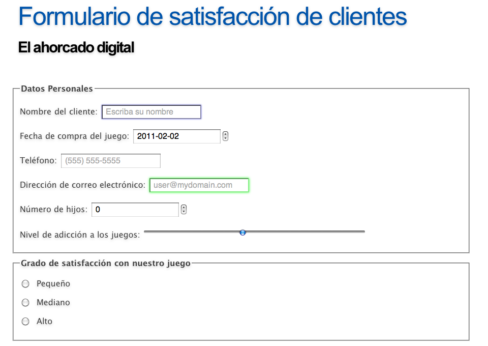
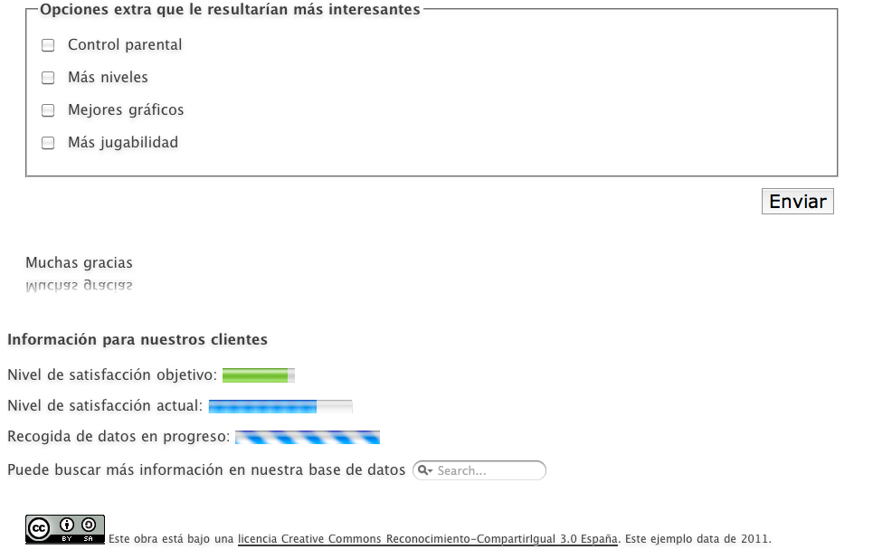

|
|
|
|
En este ejercicio se pide que analices el código fuente de una página web sencilla. En concreto, la página web de la asignatura.
En primer lugar, revisa el aspecto general de la página:
Una vez familiarizado con el diseño de la página, visualiza el código fuente para analizar la implementación.
HTML 5 introduce nuevas etiquetas para definir la estructura y contenido de una página web. En este apartado veremos cómo se aplicarían en la página con la que estamos trabajando.
Se recomienda que cada componente de la pareja abra sesión en AG en un navegador distinto para que podáis rellenar ambos el cuestionario.
A lo largo del curso, se pide que desarrolléis dos proyectos en equipo. El objetivo de este ejercicio es diseñar la página web de dicho equipo, como si de una empresa se tratara.
En primer lugar, pensad (¡sin escribir aún código!) qué información queréis publicar: nombre de la empresa, logo, información de contacto, personal, objetivos, áreas de trabajo, productos, etc. Dibujad en papel un diseño esquemático.
A continuación, plasmad dicha información de forma estructurada en un fichero HTML.
Crea un fichero de texto plano, con extensión html. Puedes usar cualquier editor de texto plano o bien Dreamweaver, que es un editor específico de páginas web. Si usas Dreamweaver, asegúrate de utilizar la pestaña de edición de código fuente.
Estructura la información utilizando las etiquetas adecuadas (no te preocupes por ahora por el formato):
Visualiza la página web creada. Observa que se aplica el formato por defecto.
Recuerda que un buen diseño web separa el contenido de la presentación. Por tanto, en HTML 5 se recomienda especificar el formato mediante reglas CSS, prescindiendo de etiquetas de formato correspondientes a versiones anteriores del lenguaje.
Las reglas CSS pueden definirse incrustadas en la propia página HTML, mediante la etiqueta STYLE en la cabecera de la página (head). Escribe las reglas CSS necesarias para:
La principal desventaja de definir las reglas CSS incrustadas en la propia página HTML, mediante la etiqueta STYLE, es que habría que repetirlas para cada una de las páginas de un sitio web si se quiere mantener un estilo uniforme. Por ello, lo más habitual es definirlas en un fichero aparte.
Crea un nuevo fichero, también de texto plano, pero con extensión CSS. Puedes editarlo con cualquier editor de texto plano, incluido Dreamweaver. Copia las reglas CSS que habías definido al nuevo fichero y elimínalas del fichero html. Enlaza el fichero CSS desde el fichero HTML, con la etiqueta LINK (en la cabecera head). Comprueba que el resultado es el mismo que cuando estaban definidas en la propia página.
Añade una regla para eliminar el subrayado de los enlaces. A cambio, define (mediante reglas css) un formato que los resalte en vez del subrayado de modo que el usuario pueda localizarlos fácilmente.
Añade libremente las reglas necesarias para formatear la página de acuerdo a tu diseño original.
El objetivo de esta ejercicio es diseñar un formulario web que pueda servir a modo de formulario de registro de usuarios de la empresa anterior. El formulario debe tener las siguientes características:
Figura 1: Ejemplo de formulario similar al que debe programarse


Tras la finalización de la práctica, deberíais ser capaces de contestar a estas preguntas: